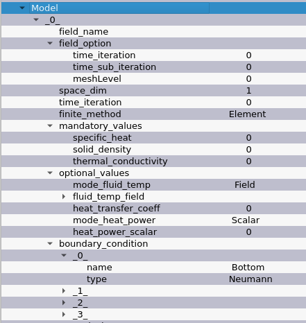

Usage¶
Create a new SOLVERLAB tree by clicking on the first item of the toolbar, in red on the picture below:

Right click on the fileMed field to import the .med to study.
Then, right click on Model to choose the physical model to apply.
Note
Not all model are yet implemented in the GUI.
The data of the model can now be freely modified.
Models have computation_parameters and numerical_parameters.

file_name is the name of the result file produced by SOLVERLAB, at the end of the simulation.
To launch the simulation, go to the Analysis section of the tree view.
Before launching the simulation, check Analysis to select how to launch the simulation.

name under Analysis/dataInformations is the directory name where the result file will be stored.
Two launch modes are available. The foreground mode freezes the GUI until
the computation ends. The background mode runs the simulation as a background
process, and let the GUI running.
Model¶
This section explains the options of the Model section of the Tree Object.
The SOLVERLAB Tree Object is composed of several parts:
GeometryMedfileMed: the.medfile to work on (it can be imported by right-clicking and selectBrowse file)contents: read the selected file and display some important information about its content
Modelthe list of models (right-click to add one)
Analysisdatainformationsname: name of the directory the study is saveddirectory: location of the base directory of |sovlerlabgui|
caseSolverlablaunchInBackground: wether to launch the computation as a background job. More information can be found here hereEquation: which equation to solve, from the list of modelsNumberOfProcessors: if in background try to launch SOLVERLAB in multicore
Diffusion Equation¶
The documentation for this equation can be found here
A field need to be present in your mesh file, in order to be visible in the Tree Object. The field_option are advanced configurations, it is recommended to leave them to their default value.
Some values can be the name of a field of a mesh file or a scalar. The GUI let you choose between those two options.
The boundary condition are created dynamically from the content of the .med file.
Background¶
When a simulation is launched in background, it allows to replay the computation later. Moreover, it avoids freezing the GUI.
The simulation’s configuration is serialized as an xml file, stored in the output
directory. The mesh can also be copied, in order for the output directory to be
a standalone study, compatible with the direct use of SOLVERLAB.
When a case is launched, a bash script is generated. This script notably set the shell environment of the computation, allowing to easily launch the computation again later.
A Python file is also copied from PACKAGESPY. This file is needed in order to launch the simulation again.
It can be modified locally, in order to change the computation’s parameters.